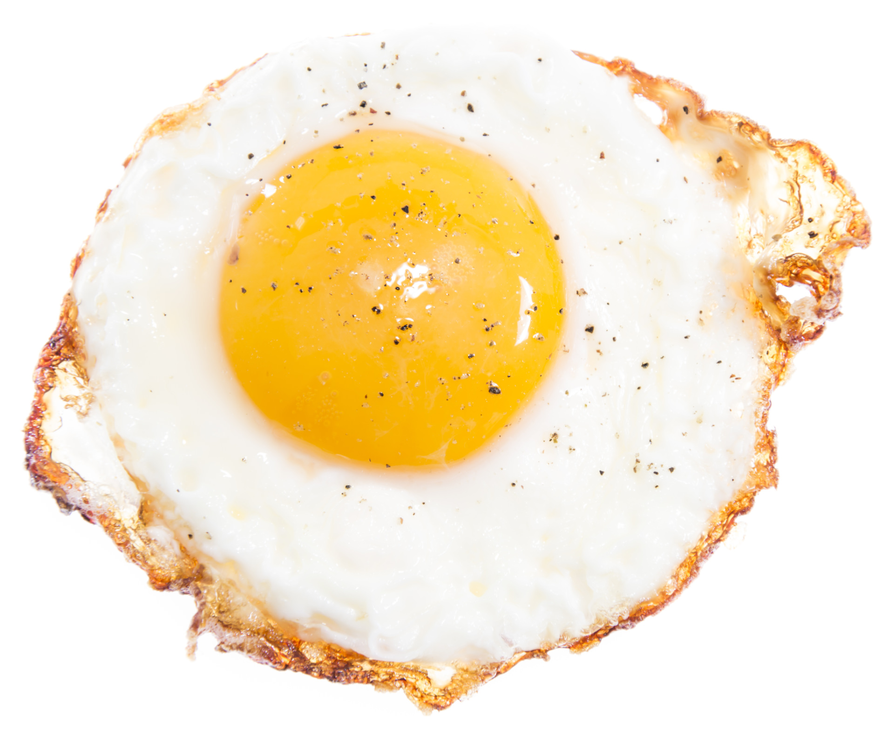

In all shapes and sizes. From all types of animals. Beautiful inside and out. The egg is natural perfection.
I Agree
Look at all the different ways to cook eggs.
Easy mode:
Scrambled eggs. The introduction to egg consumption. Hard to mess up since theyre messed up by design.

Normal mode:
Fried eggs. Getting into more difficult territory now. The yolks have to remain unpopped or its ruined.
Hard mode:
Boiled eggs. Few have the patience for this method. The actual hard part is peeling the shells.
Expert mode:
Raw eggs. The easiest way to cook eggs but the hardest way to consume them. True bliss awaits.
Of those beings who live in ignorance, shut up and confined, as it were, in an egg, I have first broken the eggshell of ignorance and alone in the universe obtained the most exalted, universal Buddhahood.